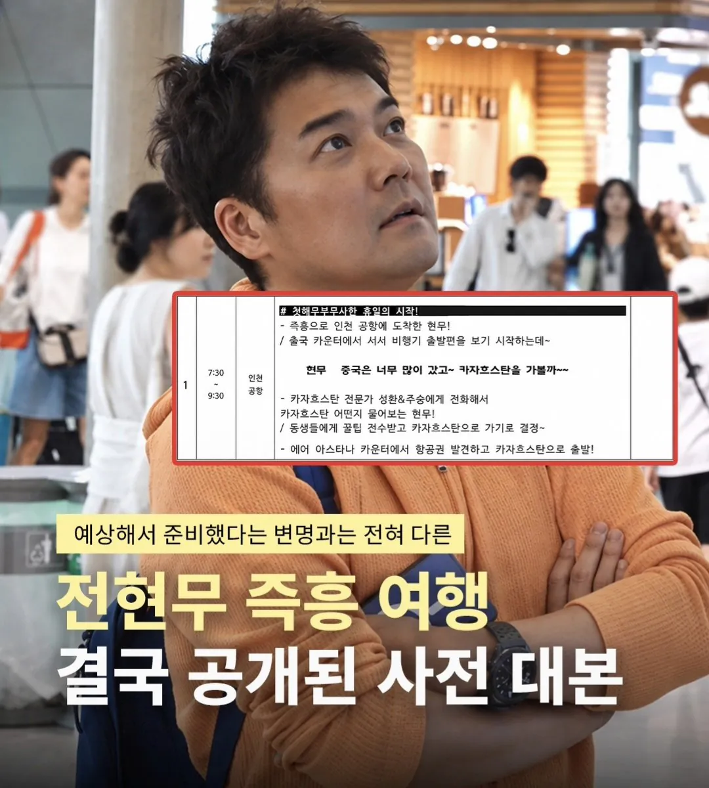
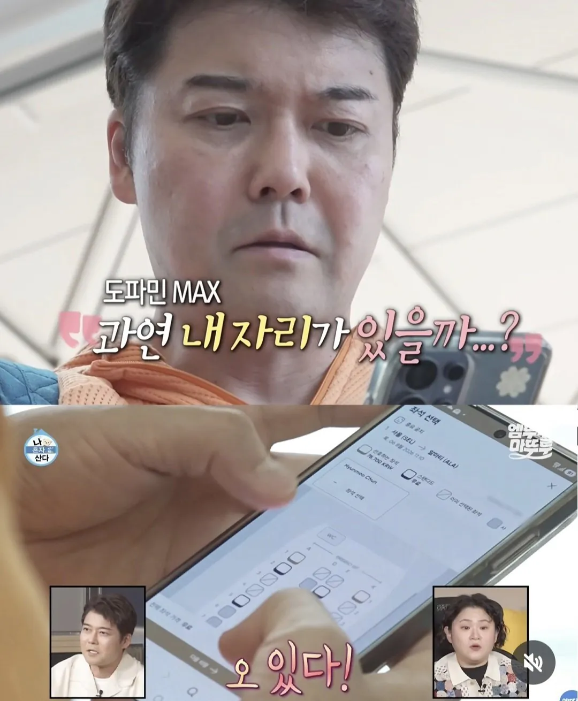
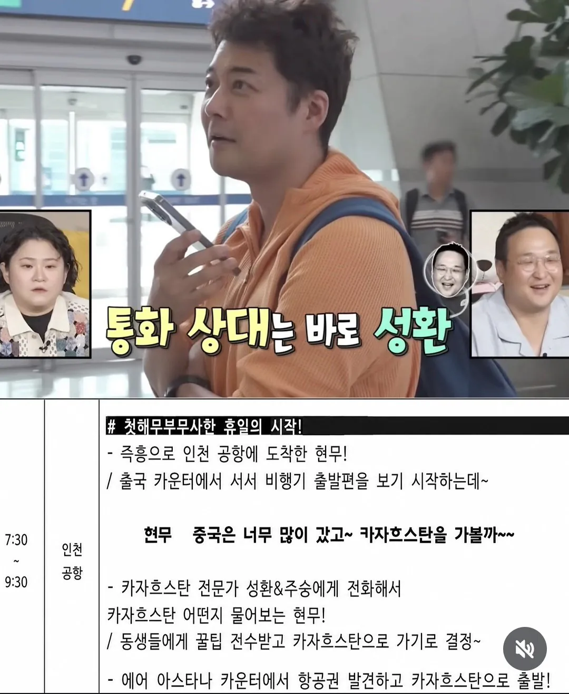

즉흥 두글자만 넣지말지
쓸데없는 기싸움을 쳐 하니까
전현무 나오는 프로그램 전부 똑같아 보임 ㅋㅋ
대본이 있는데 몰랐다는게 말이되나? 그럼 대본 역할이 뭐지? 아 즉흥컨셉인지 몰랐다는건가
그러니까 출연자한테 뭐할거냐 물어보고 거기에 맞춰서 대본을 어느정도 짜는게 아니고 대본을 미리 짜놓고 출연자한테 거기에 맞추게 한건가??
카자흐 현지에서 현대차 렌트할때부터 알았음
1박2일도 예전에 충주대인가? 어디 지방에 대학교 게릴라 콘서트 연다고 했는데 그거 다 사전에 섭외된거고 대본이였다며 걍 방송은 전부 다 사전에 준비한다고 보면 됨 예전에 우리 회사에 유명 연예인 와서 유튜브 촬영했는데 즉흥적으로 직원 인터뷰하는 장면은 누가 인터뷰할지도 다 정해놨었고 인솔자도 다 사전 협의 된거였음 심지어 밥 먹을 때도 사전에 부서별로 섭외된 사람들 앉아있는 테이블에 자연스럽게 합석해서 인터뷰하는 것까지..
나는 코빅같은데서 '대본에 없는거 하지마!!'하는 대사까지 대본이라고 봄
근데 테레비 연예인들 상대로 대본이니 아니니 따지며 악착같이 화내는 이유가 뭐임? 뭔 학폭이나 음주가 있는거도 아닌데 이게 왜이렇게 오래 증오받는거여?
기만당한 느낌이니까?
이럴거면 대본대로산다로 바꾸는게 욕도 안먹고 좋을듯
애초에 wwe랑 같아서 즉흥연출인거 알고 보는건데 거기다 기싸움쳐하니 문제가 된거지
방송을 위해 최소한의 가이드 라인은 있습니다~ 식으로 넘어갈수 있었는데
왜 저런 병신 같은 기싸움 하지? 했는데 전현무 걸고 즉흥머시기 프로그램 나오는거 보니 이해는 되더라 ㅋㅋㅋ
시작도 못하고 버릴바에 기싸움 한 번 해보겠다 였던거 같은데 둘 다 좆되기만했지